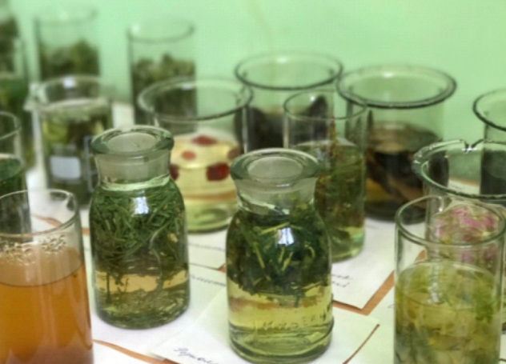
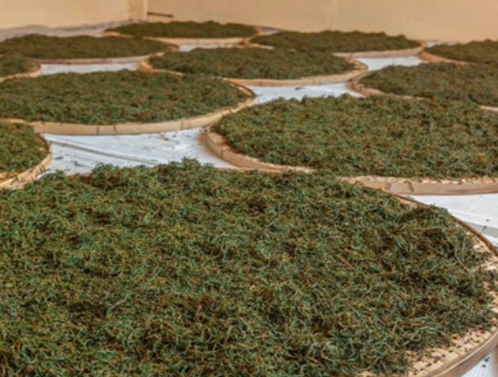
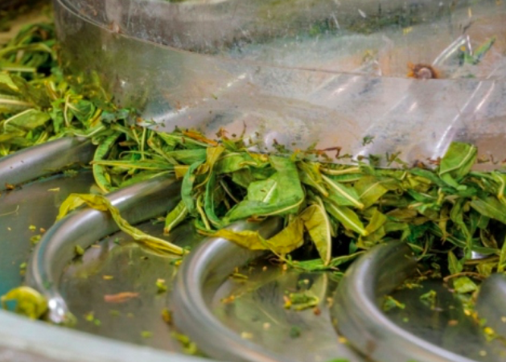
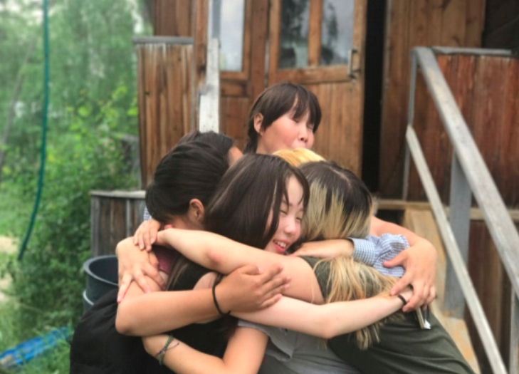
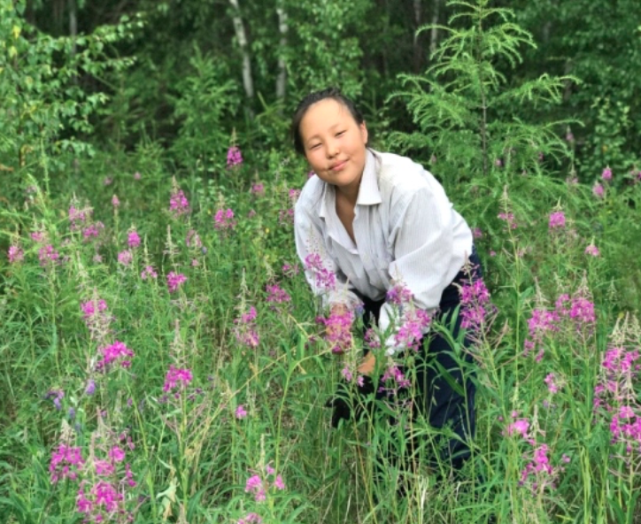
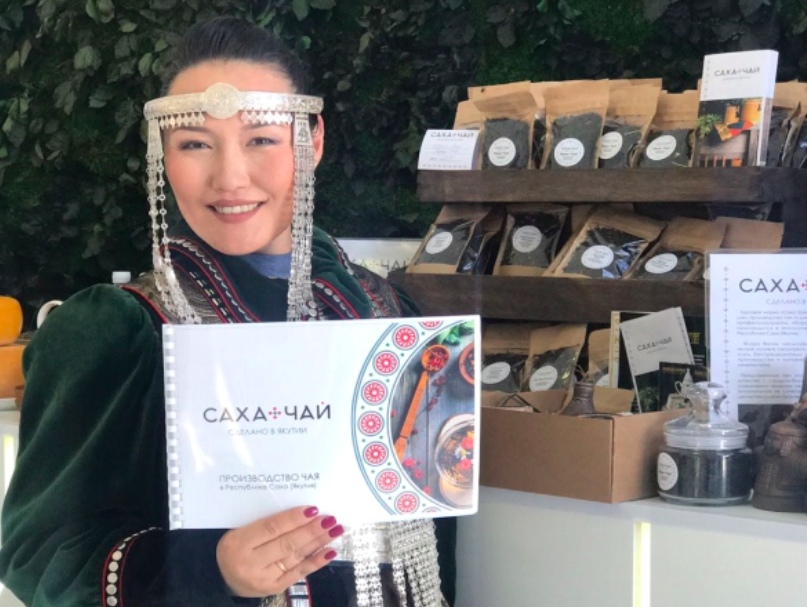

ТЕКУЩЕЕ СОСТОЯНИЕ ПРОЕКТА
- За летний сезон 2018 года, нами было собрано и переработано более 17 тонн сырья, произведено около 3,5 тонн готовой чайной продукции.
- В Хангаласском улусе функционируют два производственных цеха, на 2019 год планируется дополнительно запустить три цеха на территории Намского, Мегино-Хангаласского и Хангаласского улусов.
- Создан уникальный рецепт производства чая.
- Проведены работы по сбору сырья на территории Хангаласского, Амгинского, Мегино– Хангаласского, Алданского, Намского, Вилюйского и Верхне-Вилюйского улусов.
- Совместно с научными сотрудниками Института биологических проблем криолитозоны СО РАН, нами разработано 30 сортов чайных купажей.
- Готовый продукт прошел лабораторную экспертизу и получил Декларацию о соответствии.
- В 2018 году дополнительно приобретено 3 комплекта оборудования полного производственного цикла.
- Ведутся работы по созданию прототипа мобильного цеха по производству чая (подана заявка в Сколково).
- Заключен договор поставки черного чая и обучения персонала с Чженцзянской торгово-промышленной компанией (КНР).
- Заключено соглашение о сотрудничестве с Якутским региональным отделением Молодежной общероссийской общественной организации «Российские Студенческие Отряды».
- Ведётся сотрудничество с агрошколами Республики, в части трудового воспитания школьников старших классов.
- Имеются налаженные контакты с предпринимателями в чайной отрасли России, в том числе с крупными производителями чая.
- Получен сертификат Соответствия Системы добровольной сертификации «Сделано в Якутии» уровня Б.
- Заключен договор поставки чая с Международной компанией «Унция», которая имеет филиалы в крупных городах России и в странах: Азербайджан, Казахстан, Украина и Финляндия. Чай продается под торговым названием «Якутский Иван чай».





